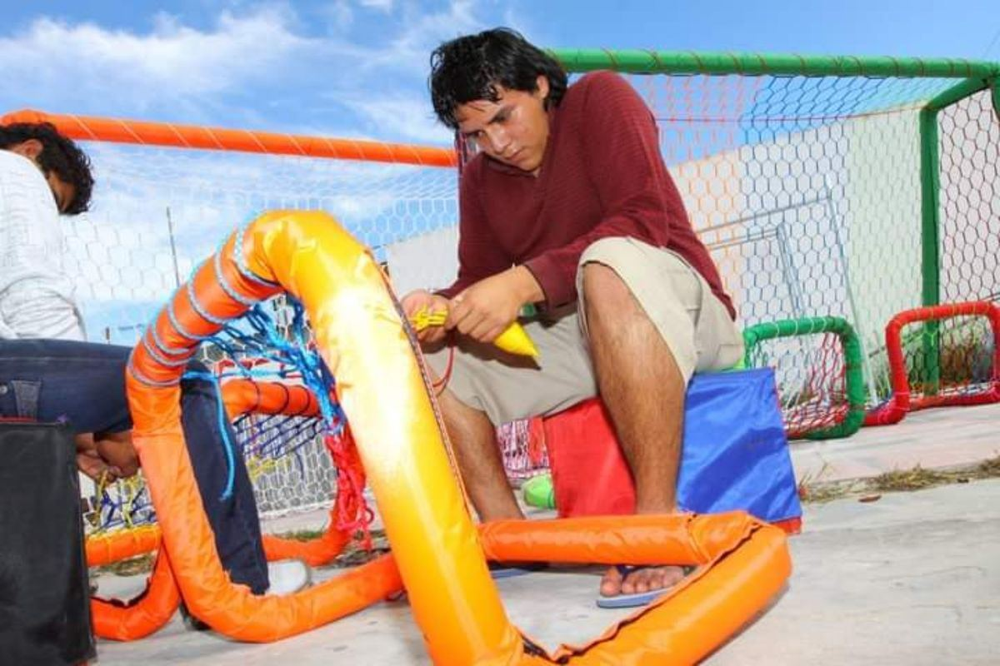
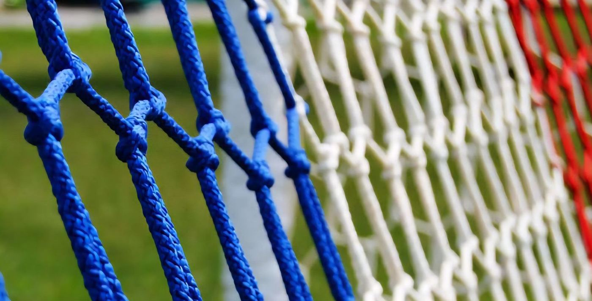
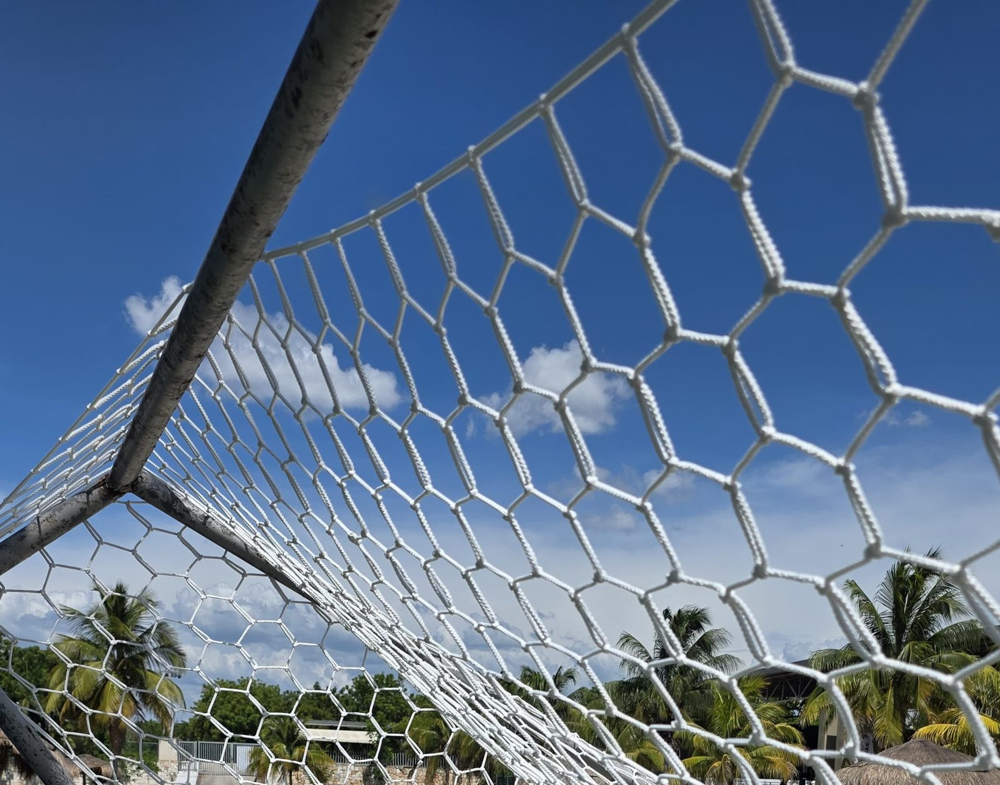
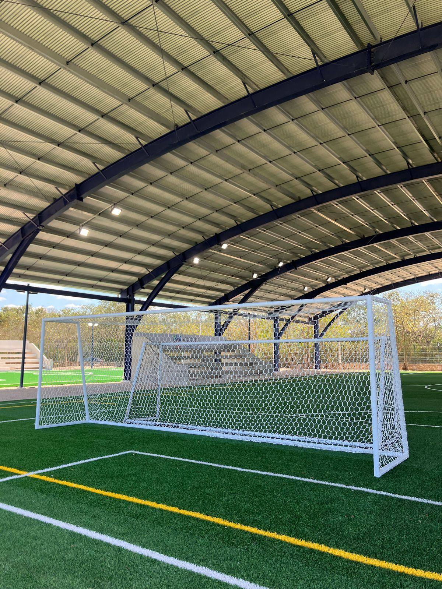
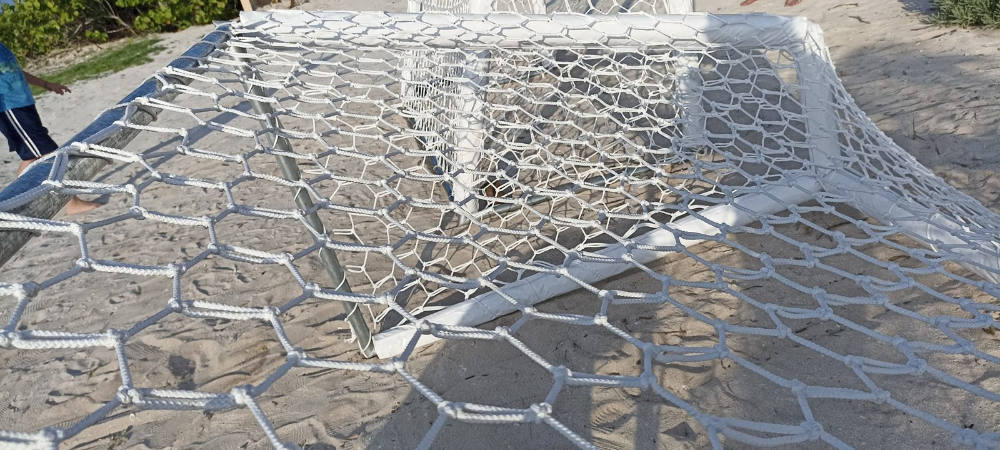
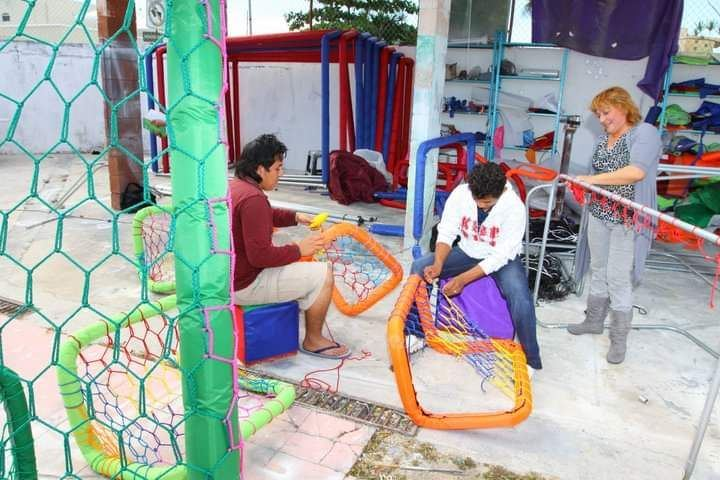

Así se ve en la cancha

Las 4 medidas de tu portería
| A | Travesaño (ancho) | |
| B | Poste (altura) | |
| C | Profundidad superior | |
| D | Profundidad inferior |
Si tu portería tiene la misma profundidad arriba y abajo, C y D son iguales.

Ficha técnica
- Tejido hexagonal tipo colmena, hexágono de 10 × 10 cm.
- Cordón 100% poliéster trenzado de 60 filamentos.
- No es red comercial: el sol no la quema. Resistente a la intemperie.
- Orilla doble reforzada.
- La misma red que usan equipos de primera división. Más de 3 años de duración.
- Blanca, o en el color que quieras.
Fotos






🚚 Envío a toda la repúblicaPor paquetería, o por avión si la necesitas rápido.
🪜 Fácil de colocarSe amarra con el cordón incluido o con cinchos. Solo necesitas una escalera.
🛠️ En Mérida te la instalamosAgendamos la fecha contigo.
Tu cotización te llega en el chat
Regresa a la conversación: ahí te mandamos tu cotización.